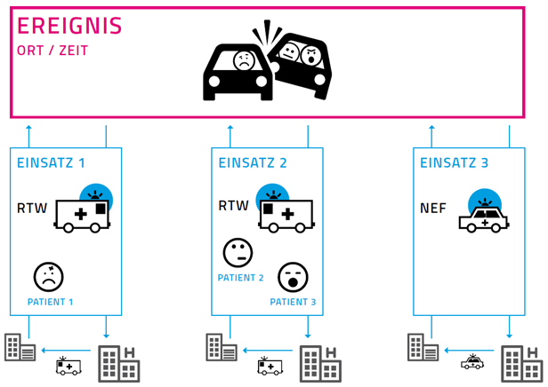
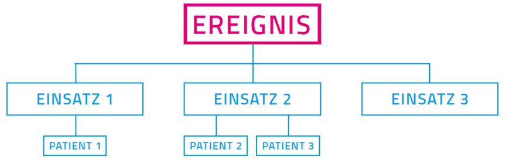
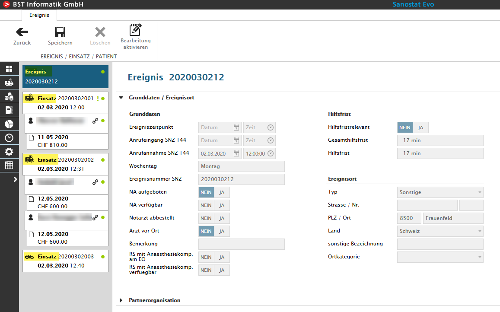

Ereignis / Einsatz / Patient
Ein Grundkonzept von Sanostat Evo ist das 'Ereignis/Einsatz/Patient'-Konzept. Mithilfe dessen, ein Rettungseinsatz in einzelne verrechen- sowie auswertbare Elemente zerlegt werden kann.
Begriffsdefinition für Sanostat Evo
|
Begriff |
Definition |
Beispiel |
|
Ereignis |
Situation, die zum Aufgebot von Einsatzmitteln führt |
Zu einem Ereignis können mehrere Einsatzmittel entsandt werden. Wird mancherorts als „Fall' bezeichnet. |
|
Einsatz |
Aus einem Ereignis heraus resultierendes Aufgebot von einem Einsatzmittel |
Für ein einziges Ereignis können mehrere Einsätze stattfinden. Jeder Einsatz bezieht sich auf das Aufgebot von genau einem Einsatzmittel. Ein Einsatz kann aus verschiedenen Gründen auch abgebrochen werden. |
|
Patient |
Benötigt keine weitere Definition |
Pro Einsatz sind keiner, einer oder mehrere Patienten möglich. |
Beispielszenario
Ein Unfall mit zwei beteiligten Fahrzeugen sowie drei Personen. Dafür werden zwei RTW's sowie ein NEF aufgeboten.

Betrachtet man das obige Szenario etwas genauer, lassen sich folgende Elemente identifizieren:

Und dies wird so im Sanostat Evo abgebildet, die Patienten mit den dazu erstellten Rechnungen.
